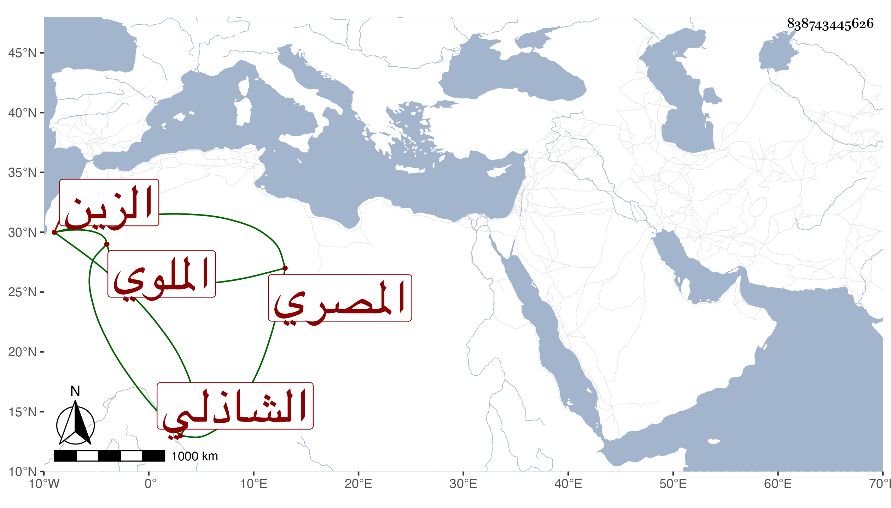

0902Sakhawi.DawLamic.ITO20230111-ara1.EIS1600.838743445626
Biography ID: 838743445626
99
أبو بكر بن عبد الله بن أيوب بن أحمد الزين الملوي ثم المصري الشاذلي أخو الشمس محمد الريس الماضي وحفيد أيوب شيخ معتقد له زاوية بملوى . ولد سنة اثنتين وستين وسبعمائة وصحب الفقراء وتلمذ لحسين الحبار ثم لازم صاحبه الصلاح الكلائي وصار يتكلم على الناس بزاوية شيخه الحيار بقنطرة الموسكي ويفسر القرآن برأيه على قاعدته فضبطوا عليه أشياء ورفع إلى القاضي الجلال البلقيني فمنعه من ذلك إلا إن قرأ من تفسير البغوي وغيره واجتمع بي بسبب ذلك فوجدته حسن السمت عريا عن العلم وكان قال فيما ذكر لي أنه رأى في قوله تعالى
